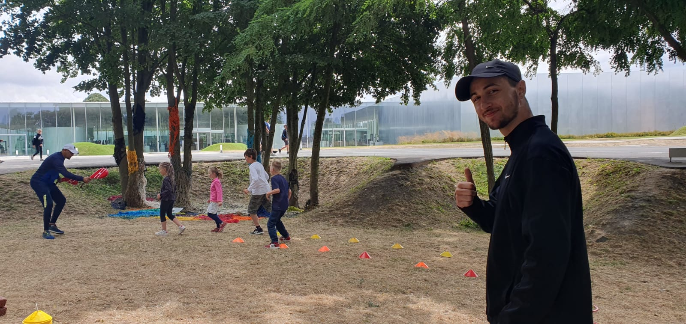
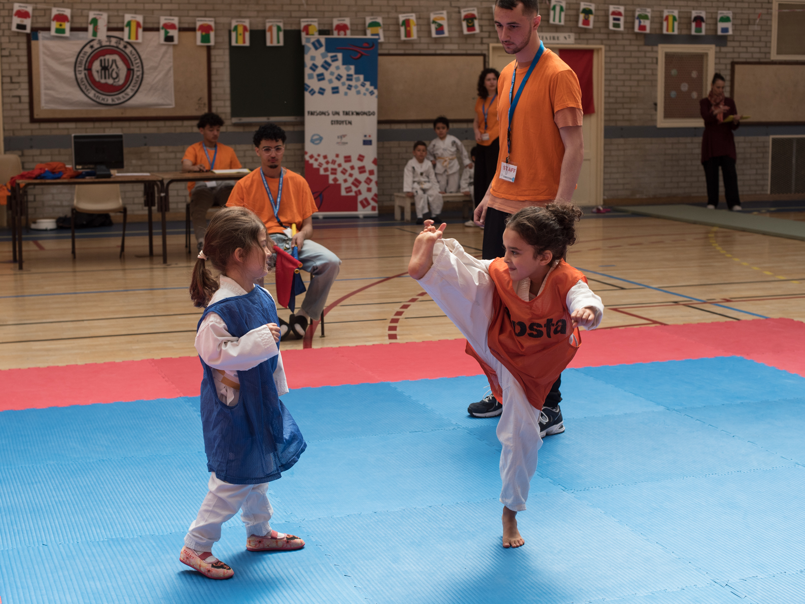
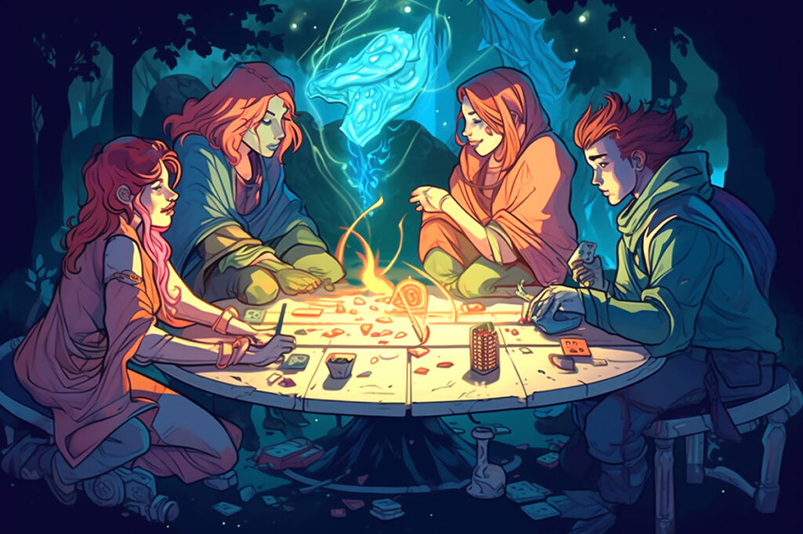
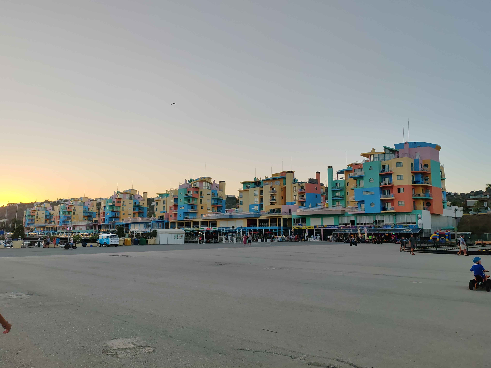

Trévys Sarrazyn
Étudiant en informatique et animateur BAFA passionné avec une expérience dans l'encadrement et l'animation d'activités pour enfants. En dehors de cela, je suis assistant entraîneur et coach dans mon club de taekwondo. J'y consacre beaucoup de temps et d'énergie pour aider les membres à atteindre leurs objectifs et à progresser dans leur pratique.
Mes Qualités
- A l'écoute
- Appliqué
- Sérieux
- Ponctuel
- Sociable
- Dynamique
Diplômes et Formations
-
Léo Lagrange
07/2024
BAFA Approfondissement Loisirs et Handicaps
-
Lycée César Baggio
2022 - 2024
BTS SNIR (Systèmes Numériques option Informatique et Réseaux)
Description des principales matières ou projets marquants : Programmation en C, C++ et Java, développement web, réseaux informatiques, développement d'applications, stage en entreprise, projets de fin d'études sur le développement d'applications mobiles. -
Lycée César Baggio
2019 - 2022
Baccalauréat Général, spécialités : Mathématiques, NSI (Numériques Sciences de l'Informatique) et Sciences de l'ingénieur
Description des principales matières ou projets marquants : Programmation en Python, développement web, réseaux informatiques, mathématiques, sciences de l'ingénieur. -
Croix-Rouge
08/2023
PSC1
Formation Prévention et Secours Civiques de niveau 1
Expériences Professionnelles
-
Caramel - Mons-en-Barœul
Vacances de la Toussaint 2024
Animateur élémentaire
-
ETM - Villeneuve d'Ascq
du 22 au 26 juillet 2024
Animateur - Iniatiation au Taekwondo
-
Caramel - Mons-en-Barœul
Vacances Printemps 2024
Stagiaire animateur élémentaire
-
Caramel - Mons-en-Barœul
Vacances Hiver 2024
Stagiaire animateur maternelle
Expériences Associative
-
École Taekwondo Monsoise
09/2022 - 2025
Bénévolat dans une association sportive
Aide à la création d'un référentiel de passage de et d'affiche, aide administrative et informatique, assiste le professeur durant les entraînements, coach durant les compétitions. -
Mairie de Mons-en-Barœul
été 2023
Bénévolat des Dimanches du Baroeul
Aide la préparation des 3 dimanches du Baroeul (création d'affiches et tickets numériques et de pancartes peintes), au fonctionnement (installation et rangement de stands avec animation de différents stands) et de la mise en place d'un cinéma pleine air.
Compétences
Créativité & imagination
Résolution de problèmes
Prise de parole en public
Gestion événementielle
Conception d'activités
Informatique
Niveau de Langue
Français
★★★★★
Anglais
★★★★☆
Espagnol
★★☆☆☆
Centres d'Intérêt

Taekwondo

Jeux de rôle
Cuisine

Voyage

Informatique
×

Contact
Email : trevys.sarrazyn@gmail.com
Téléphone : 07-66-44-78-19
Localisation : Mons-en-Barœul